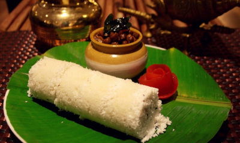
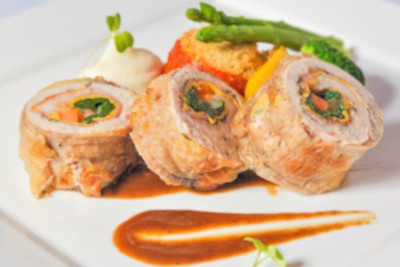
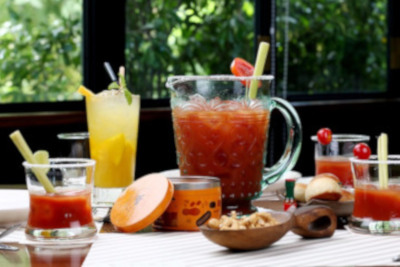
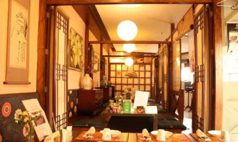
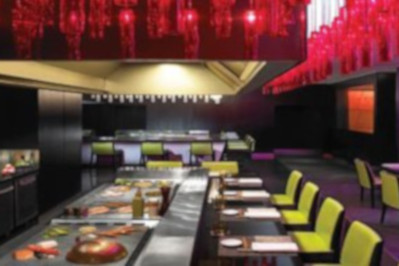
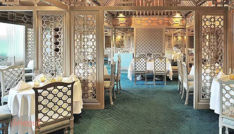
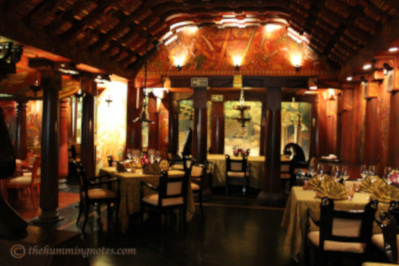
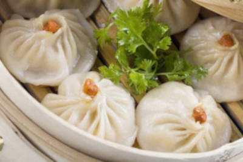
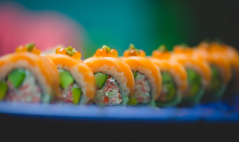
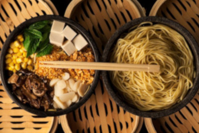

Restaurants
11. Mahabelly, Saket

The name of this restaurant draws inspiration from the legendary king of Kerala, Mahabali. Mahabelly stays true to its source of inspiration - Malayali culture and food – and features a huge variety of authentic Keralan dishes on the menu. The food is inspired by the culinary styles of the Syrian Christian, Nair and Moplah. Beef Fry and Porotta, Appam and Mutton Stew and Puttu and Kadla are the most popular dishes at Mahabelly. Don’t miss out on the special sadhyas that they organize during Onam.
12. Sanadige, Chanakyapuri

Sanadige, Bangalore’s revered fine-dine restaurant’s Delhi edition, offers its customers the authentic taste of Mangalorean culinary delights. The restaurant, spread across three floors serves veritable coastal delicacies from Goa, Karnataka and Mangalore. With soft instrumental music playing in the backdrop, the customers here are served with soft idlis and crisp dosas in a ‘Mangalorean’ bread basket along with piping hot appams.
13. Delhi Club House, RK Puram

This place comes highly recommended from the desk of food gourmand Rinku Madan. The restaurant is inspired by the clubs of colonial India and if hearty comfort food is what you seek, Delhi Club House is where you can expect to find it. Restaurateur Marut Sikka spent months travelling to different clubs from Madurai to Tollygunge to find out their best selling dishes and create a menu that is a round-up of club food in all its glory. At lunch, it operates as a cafe with glass walls and plenty of sunlight and come dinner time it turns into a chic bar with bright velvet curtains pulled down, dimmed lamps and foot-tapping music.
14. Gung The Palace, Green Park

There is no place finer to eat Korean food than Gung The Palace. It has an incredibly extensive menu and even serves Korean wine, rice beer and soju. With the signature low seating, superior quality meats sizzling over table-top charcoal grills and live karaoke, this restaurant ticks all boxes for the most authentic Korean experience in Delhi.
15. Wasabi, The Taj Mahal Hotel

Regarded as India’s finest Japanese restaurants, we cannot keep Wasabi too far behind on a list of the best restaurants in Delhi. This place is highly recommended for its show-stopping sushi varieties and its seafood dishes. You’ll be impressed with the precision and the ceremonious delivery of food. The team at Wasabi has been trained by acclaimed Japanese chef Masaharu Morimoto who is well-known for his unique style of presenting food. They also have a superb selection of Japanese whiskies, sake and plum wines.
16. House Of Ming, The Taj Mahal Hotel

House of Ming is the restaurant of choice for a special night. This fine-dining restaurant serves skillfully prepared traditional Chinese food. Whether it’s a simple bowl of soup or a dish with many complex flavours, House of Ming does it all with finesse. It specializes in serving sumptuous classics from the Cantonese and Sichuan cuisines of China. The soothing colour palette and white and blue porcelain decor exude age-old comfort while the Yin-Yang philosophy of creating dishes with a delicate balance of hot, sweet and sour flavors delivers delicious food that never fails to please..
17. Spice Route, The Imperial

This beautiful restaurant has taken years to build and is located at The Imperial. The entire restaurant is divided into nine parts, each with its own significance in portraying the journey of a human being in this world. Every part of the restaurant is hand-painted and it’s a delight to go over and examine each painting and each panel. The food is quite literally inspired by the spice route and a lot of Asian flavours are included in the form of hearty dishes. An unforgettable dining experience awaits you at this heritage hotel.
18. The China Kitchen, Hyatt Regency

The China Kitchen is, undoubtedly, one of the best Chinese restaurants in the city with food that is equally as good as in China. No one serves Peking Duck as crackling and crispy as theirs. Chef Jack Ao Yeung ensures authenticity going into every dish that comes out of the kitchen, offering a medley of flavours that will beg you to have more. He has travelled through Sichuan and gathered recipes from old masters. With his team of eight talented Chinese chefs from Chengdu, Sichuan’s culinary capital, you can be rest assured to have a pleasurable experience..
19. Guppy, Lodhi Colony

Guppy is nicely tucked away in Lodhi Colony and is totally a place to go for a great Japanese meal. They change their menu every few months to incorporate the freshest flavours of the season but you can expect the same quality. They also have an excellent selection of sake that you can enjoy with your food. With kokeshi dolls and antiques in pop colours, you feel like you’ve entered a Japanese wonderland. Chef Vikram Khatri also hosts interactive sushi-making workshops regularly and that’s something you must not miss.
20. Yum Yum Cha, Saket

From the founders of Yum Yum Tree that made us fall in love with sushi, comes another gem of a restaurant. They are famous for introducing a different style of sushi which is more dramatic with creamy sauces and crispy flakes. You will find some of the most creative culinary fusions on their menu like the Chilli Cheese Dumplings or the Pink Paan Mochi Ice Cream.